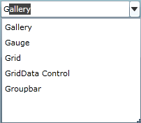

Auto Append is used to guide the complete text by appending the entered text with suitable text from the data source, when a text is entered in the AutoComplete textbox. AutoComplete allows you to enable Auto Append using IsAutoAppend property.

Figure 34: Auto Append
Adding Auto Append Support to an Application
If the IsAutoAppend property is set as True, once you enter the text, the AutoComplete guides you to complete the text, by appending the entered text with suitable text from the data source. If this property is set as False the matched suitable text will not append with the entered text.
The code given below illustrates the IsAutoAppend property set to True.
|
[XAML] <syncfusion:AutoComplete x:Name="AutoComplete1" IsAutoAppend="true"/> |
|
[C#] AutoComplete autoComplete1 = new AutoComplete(); this.autoComplete1.IsAutoAppend = true; |
Tables for Property, and Event
Property
Table 7: Property Table for Auto Append
|
Property |
Description |
Type |
Data Type |
Reference links |
|
IsAutoAppend |
Gets or sets the value of IsAutoAppend in the AutoComplete. |
DependencyProperty |
bool(true) |
Event
Table 8: Event Table for Auto Append
|
Event |
Description |
Arguments |
Type |
Reference links | |
|
IsAutoAppendChanged |
When the value of IsAutoAppend is changed this event will be triggered. It cannot be cancelled. |
DependencyObject, DependencyPropertyChangedEventArgs |
DependencyPropertyChangedCallBack |
||
Sample Link
SilverlightSampleBrowser-> Tools -> Editors -> AutoComplete Demo